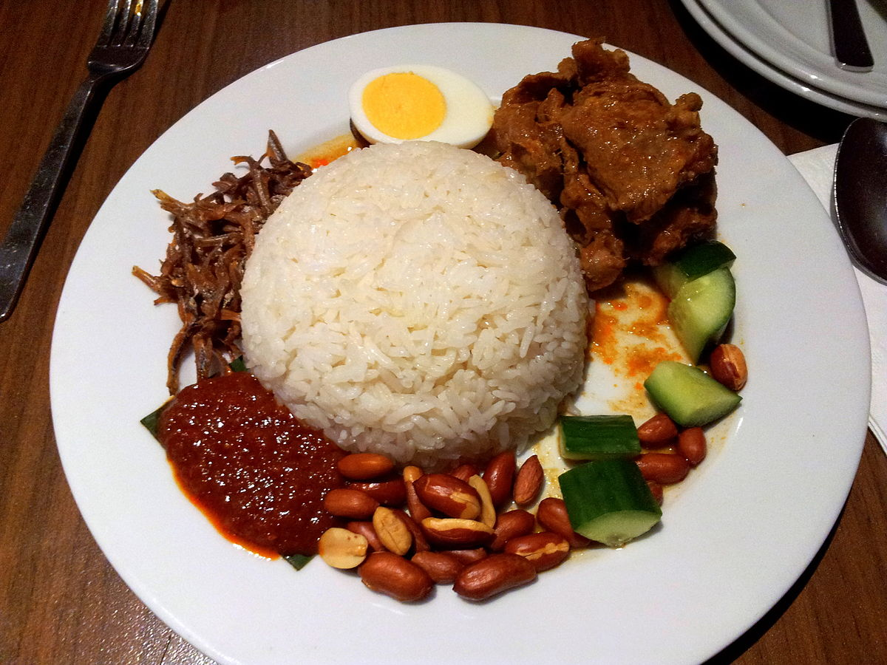

Nasi Lemak Recipe

Nasi lemak is a dish originating in Malay cuisine that consists of fragrant rice cooked in
coconut milk and pandan leaf. It is commonly found in Malaysia, where it is considered
the national dish.
INGREDIENTS
- 2 cups uncooked basmati rice, rinsed and drained
- 1 ¾ cups water
- 3 shallots, thinly sliced
- 1 (3/4 inch thick) slice fresh ginger root, thinly sliced
- 1 teaspoon salt to taste
- 6 shallots, chopped
- 15 dried red chile peppers, or to taste
- 1 (1/2 inch) piece fresh ginger, minced
- 1 tablespoon shrimp paste
- 1 tablespoon vegetable oil
- 1 tablespoon white sugar
- ½ cup tamarind juice
- salt to tast
- 1 onion, sliced
- 1 pound large shrimp, peeled and deveined
INSTRUCTION
- Bring the rice, water, sliced shallots, coconut cream, ginger, and salt to a boil in
a saucepan over high heat. Reduce heat to medium-low, cover, and simmer until the
rice is tender, and the liquid has been absorbed, 20 to 25 minutes. Meanwhile,
place the chopped shallots, dried chile peppers, minced ginger, and shrimp
paste in a blender and process to a thick paste.
- Heat vegetable oil in a large skillet over medium-high heat. Cook and stir chile
paste until fragrant. Stir in sugar, tamarind juice, and salt, then toss in
onion and shrimp and simmer until shrimp are bright pink on the outside
and the meat is no longer transparent in the center, about 5 minutes.
Serve over the hot rice.